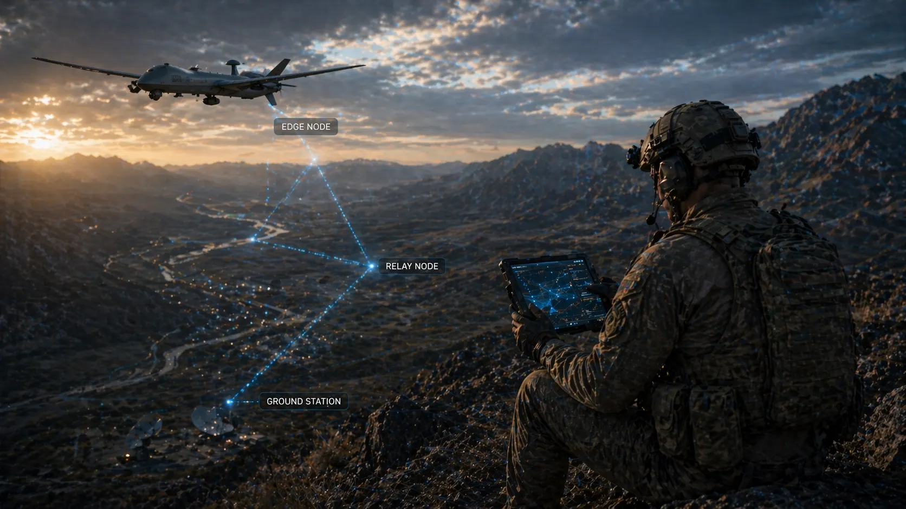

1. Purpose of Document
This document defines the SPARTA system architecture baseline at PDR maturity, including functional, logical, and physical decomposition; external and internal interfaces; connectivity and data flows; the key data entities and their schemas; and selected sequence behavior for mission-critical exchanges. It is the allocation target for Deliverable 02 and the subject of verification in Deliverable 04.
2. Scope and Applicability
The scope is system-level architecture. Detailed subsystem design, implementation-specific technology selections, and program-specific ICD ownership boundaries remain open to refinement but are provisionally framed here where necessary for coherence. Values prefixed provisional will be confirmed by the integration campaign.
3. Architecture Drivers, Assumptions and Principles
3.1 Drivers
- Fast conversion of cyber evidence into mission-consumable trust outputs (SYS-PERF-001).
- Operation with and without TSOC connectivity (SYS-OPS-001).
- Authority-aware separation between cyber advice and mission command execution (SYS-DC-001).
- Compact tactical exchanges and richer evidential exports (SYS-PERF-002, SYS-DATA-*).
- Phased deployment A/B/C under a stable external data model (SYS-DC-002).
- Independent lifecycle of content (policies, rules, models) from the accredited software baseline (SYS-DC-004).
3.2 Governing Architecture Principles
- Process locally; correlate tactically; fuse strategically. Trust is generated at the edge, corroborated with neighbors, and adjudicated by TSOC.
- Stable data objects across modes. External contracts are identical in Mode A/B/C; richness varies, semantics do not.
- Separation of concerns. Sensing, inference, recommendation, and actuation are distinct internal interfaces.
- Provenance on every output. Trust, recommendations, and evidence carry reason-chain and validity metadata.
- Resource contract. Edge footprint is contractual, not best-effort.
- Content-signed, software-separated. Policies and models are signed content; the software stack is accredited separately.
- Authority-safe defaults. Unknown policy = most restrictive action envelope.
3.3 Architecture Assumptions
- MARS exposes mission role/task/state context via a published, versioned interface.
- Identity and keys are provisioned in advance of mission execution.
- Common time reference (±50 ms) is available.
- Tactical correlator functionality can be logically co-hosted or hosted on a dedicated fog node.
4. Functional Architecture — Canonical FBS (FM)
security-relevant data"] --> F2["F2 NORMALIZE & ENRICH
locally"] F2 --> F3["F3 DETECT
threats & anomalies"] F3 --> F4["F4 PRIORITIZE & TRIAGE
alerts"] F4 --> F5["F5 STORE & PROTECT
resiliently"] F5 --> F6["F6 TRANSMIT
DDIL-aware"] F6 --> F7["F7 INTERFACE
with Airbus TSOC"] F7 -.signed rule update.-> F3 F8["F8 INTEGRATE
with drone environment
(read-only)"] --> F1 F9["F9 MANAGE
system integrity & config"] -.self-attest.-> F3 F9 -.self-attest.-> F6 F10["F10 CONFIGURE
threat detection locally"] --> F3 F10 --> F4 classDef core fill:#eaf1f8,stroke:#1f4e79,color:#142033; classDef ext fill:#ebfff7,stroke:#0a5b47,color:#142033; classDef mgmt fill:#fff7e6,stroke:#8a5a00,color:#142033; class F1,F2,F3,F4,F5,F6 core; class F7,F8 ext; class F9,F10 mgmt;
| Function | Description | SYS-* trace | Realizing Components |
|---|---|---|---|
| F1 COLLECT | Collect system logs, network metadata, hardware telemetry, RF/comms link data, MARS-virtualization events, and security-control audit. | SYS-FUNC-001, SYS-FUNC-002 | Host collector · Network collector · RF/link collector · MARS event collector · Audit collector |
| F2 NORMALIZE & ENRICH | Parse heterogeneous formats, normalize to ECS/CEF-compatible schema, timestamp/synchronize, enrich with asset context. | SYS-DATA-001..004, SYS-FUNC-007 (AC) | Parser registry · Schema normalizer · Time-fusion module · Asset-context enricher |
| F3 DETECT | Signature detection (IOCs), behavioural/anomaly detection (ML), lateral-movement detection, integrity-violation detection, cross-domain correlation hint emission. | SYS-FUNC-003, SYS-FUNC-004, SYS-SEC-003, SYS-FUNC-010 | IOC engine · ML detector(s) · Integrity attester · Cross-domain hinter |
| F4 PRIORITIZE & TRIAGE | Score alerts (severity × mission-criticality × asset weight), local correlation, FP suppression, queue by DDIL priority. | SYS-FUNC-011, SYS-FUNC-005, SYS-HFE-002 | Triage Engine · Priority queue · Context-filter |
| F5 STORE & PROTECT | Ring-buffer raw events, compress/deduplicate, persist prioritized alerts for guaranteed delivery, enforce retention & secure deletion, encrypt at rest. | SYS-FUNC-008, SYS-DATA-005, SYS-SEC-002, SYS-RAM-002 | Evidence store · Retention enforcer · Crypto services |
| F6 TRANSMIT (DDIL) | Select best available platform link; transmit high-priority alerts first; operate autonomously when link unavailable; resync on restoration; end-to-end encrypted. | SYS-PERF-001, SYS-OPS-003, SYS-OPS-006, SYS-IF-001..005 | DDIL scheduler · Link selector · Backhaul transport · Crypto services |
| F7 INTERFACE with TSOC | Forward normalized alerts + context; expose asset inventory; receive & apply signed hot-swap rule updates (F7.4); ACK TSOC response actions (read-only); support TSOC-driven forensic pull. | SYS-IF-003, SYS-DC-005, SYS-IF-006, SYS-IF-007, SYS-DC-004 | TSOC Adapter · Rule-update chain · Identity Adapter · Forensic pull handler |
| F8 INTEGRATE with drone | Read-only: monitor hypervisor/container events, consume drone APIs, receive MARS-layer events, support hot rule updates without reboot. No write path to avionics. | SYS-DC-001, SYS-IF-004 | MARS (virtualization) adapter · Hypervisor-event consumer · Read-only drone-API client |
| F9 MANAGE integrity & config | Zero-trust auth of components, signed rule/signature chain, self-health watchdog, remote config via secured channel. | SYS-FUNC-010, SYS-SEC-001..003, SYS-SAFE-003 | Attestation engine · Crypto services · Health monitor · Secure remote-config handler |
| F10 CONFIGURE locally | Manage threat-pattern library, detection tuning, update-source trust policy, config lifecycle (export/import, RBAC, tamper-evident log), mission-specific profiles. | SYS-OPS-002, SYS-HFE-001, SYS-DC-004 | Policy/Content Manager · Profile switcher · Tamper-evident audit log |
4.1 Note on peer correlation (Mode-B-peer extension)
The canonical FM does not include a peer-exchange function. Neighbourhood-level cross-node correlation (previously F7 "Exchange Peer Summaries" and F8 "Tactical Correlation") is retained as a post-CDR optional extension — "Mode-B-peer". Baseline SPARTA produces cross-domain correlation hints (F3 sub-function) that a suitably-equipped TSOC correlates at fleet level. Hooks for Mode-B-peer remain in the baseline under the softened SYS-FUNC-006 (see Deliv. 02 §5.1), but its verification plan and Byzantine-tolerance evidence (Deliv. 06 NT-16, BY-02) are extension-scope, not baseline-scope.
4.2 Sub-function detail (F1..F10 — 66 leaf functions · 71 IDs)
The ten top-level functions decompose into 66 leaf functions (plus 5 intermediate group headers: F7.4 and F10.1..F10.4). Leaf count per function: F1 = 6, F2 = 4, F3 = 5, F4 = 4, F5 = 5, F6 = 5, F7 = 5 direct leaves + F7.4 group with 7 sub-leaves (12 functions total under F7), F8 = 4, F9 = 4, F10 = 4 groups × {5, 4, 4, 4} sub-leaves = 17. Drill-down is given per-function as a collapsible block so that the §4.1 top-level table stays scannable.
F1 — COLLECT security-relevant data (6 leaves)
| ID | Function | Note |
|---|---|---|
| F1.1 | Collect system logs (OS, application, hypervisor) | syslog, journald, hypervisor event stream |
| F1.2 | Collect network traffic metadata (flows, packets) | NetFlow / IPFIX preferred; packet capture only on demand |
| F1.3 | Collect hardware telemetry (anomalous resource usage) | CPU, memory, thermal, watchdog |
| F1.4 | Collect RF / comms link monitoring data | Link quality, modulation, packet-loss distribution |
| F1.5 | Collect MARS virtualization-layer events | Read-only view over published MARS interface (IF-EXT-01) |
| F1.6 | Collect security controls (RBAC, access audit) | Auth events, sudo/elevation, key-use events |
F2 — NORMALIZE & ENRICH data locally (4 leaves)
| ID | Function | Note |
|---|---|---|
| F2.1 | Parse heterogeneous log formats | syslog, SNMP, custom binary; extensible parser registry |
| F2.2 | Normalize to common schema | ECS / CEF-compatible; maps to SPARTA Envelope v1.0 (Deliv. 06 §10.1) |
| F2.3 | Timestamp & synchronize events | GNSS-disciplined preferred; multi-source time fusion per Deliv. 06 §3.6 T6.c |
| F2.4 | Enrich with asset context | Platform ID, role, mission criticality, data classification |
F3 — DETECT threats & anomalies (5 leaves)
| ID | Function | Note |
|---|---|---|
| F3.1 | Apply signature-based detection (known IOCs) | IOC store signed by TSOC; updated via SYS-DC-005 hot-swap chain (§10) |
| F3.2 | Apply behavioural / anomaly detection (ML baseline) | Per-platform baselines; retraining triggers in F10.2.4 |
| F3.3 | Detect lateral movement across VMs / platforms | Inter-VM traffic + auth correlation |
| F3.4 | Detect integrity violations (firmware, boot chain, memory) | Attestation-based; fail-unknown on divergence (Deliv. 06 §8) |
| F3.5 | Detect cross-domain correlation candidates | Produces correlation hints only; final correlation at TSOC (see §12.5) |
F4 — PRIORITIZE & TRIAGE alerts (4 leaves) · realizes SYS-FUNC-011
| ID | Function | Note |
|---|---|---|
| F4.1 | Score alerts by severity & mission criticality | Weighted by asset criticality (F10.2.2) and mission phase |
| F4.2 | Correlate events across sources (SIEM-like pipeline) | Local correlation only; deep correlation deferred to TSOC |
| F4.3 | Suppress false positives via context filtering | Mission-profile whitelists (F10.2.3) |
| F4.4 | Queue alerts by transmission priority for DDIL uplink | See DDIL operational pattern in Deliv. 01 §13.1 |
F5 — STORE and PROTECT data resiliently (5 leaves)
| ID | Function | Note |
|---|---|---|
| F5.1 | Buffer raw events locally (ring buffer / tiered storage) | Pre-allocated; oldest-first ejection with explicit audit |
| F5.2 | Compress & deduplicate before storage | Per-class codecs; deduplication on message_id |
| F5.3 | Persist prioritized alerts for guaranteed delivery | Persist across power-cycle; delivery receipt required |
| F5.4 | Enforce retention policies & secure deletion | Per classification; secure erase on disposal (KO-7) |
| F5.5 | Encrypt and authenticate data at rest | AES-256-GCM; keys in TPM / secure element (SYS-SEC-002) |
F6 — TRANSMIT data adaptively (DDIL-aware) (5 leaves)
| ID | Function | Note |
|---|---|---|
| F6.1 | Select best available link (satellite, RF, datalink) | SPARTA uses existing platform links; does not own RF hardware |
| F6.2 | Transmit high-priority alerts first (priority queuing) | Priorities from F4.1 |
| F6.3 | Operate autonomously when link is unavailable | Store per F5.3; Mode C behaviour per Deliv. 06 §8; DDIL fallback ruleset per SYS-OPS-006 |
| F6.4 | Synchronize with TSOC upon link restoration | Ordered by priority; idempotent on message_id |
| F6.5 | Encrypt all transmitted data (end-to-end) | TLS 1.3 FIPS profile; signed envelope |
F7 — INTERFACE with Airbus TSOC (6 leaves; F7.4 expands to 7 sub-leaves — 13 functions total) · realizes SYS-DC-005, SYS-IF-006, SYS-IF-007
| ID | Function | Note |
|---|---|---|
| F7.1 | Forward normalized alerts to TSOC ingestion endpoint | IF-EXT-02 (see Deliv. 06 §10.4) |
| F7.2 | Provide full event context per alert | Raw logs, timeline, provenance; bounded by freshness TTL |
| F7.3 | Expose asset inventory & platform topology to TSOC | Read-only; mission-instance scoped |
| F7.4 | Receive & apply updated detection rules from TSOC | Signed hot-swap chain — realizes SYS-DC-005. Expanded below (F7.4.1..F7.4.7); flow diagram in §10.2 Figure 03-9. |
| F7.4.1 | Receive signed rule / IOC packages from TSOC | Delivered over IF-EXT-02; idempotent on package ID |
| F7.4.2 | Validate package signature & version integrity | Issuer-cert pinned; monotonic counter enforced; rollback only with two-person-rule break-glass |
| F7.4.3 | Stage update (do not apply until validated) | Loaded in parallel with active ruleset; shadow-mode evaluation permitted |
| F7.4.4 | Apply update without service interruption (hot-swap) | Atomic switch at boundary event; detection-engine gap ≤ 100 ms (AC-SYS-DC-005 AC-3) |
| F7.4.5 | Roll back to previous ruleset on failure | Automatic on hot-swap fail OR on MOE-regression in shadow-mode window; prior ruleset preserved in memory until success confirmed |
| F7.4.6 | Acknowledge successful update to TSOC | Individual ACK per package; success logged in tamper-evident audit |
| F7.4.7 | Queue updates received during DDIL for ordered apply on link restoration | Monotonic-order application on link-up; each ACK'd individually; realizes the DDIL-queue invariant of SYS-DC-005 |
| F7.5 | Acknowledge TSOC response actions (read-only feedback) | SPARTA does not execute TSOC-commanded response on the platform; it acknowledges receipt for TSOC workflow tracking |
| F7.6 | Support TSOC-driven remote forensic data pull | Authorized pull only; audited; DDIL-aware |
F8 — INTEGRATE with drone environment (4 leaves · platform-integration surface, read-only)
F8 is a platform-integration surface rather than a SPARTA-internal function — it defines what SPARTA expects from the host, not what SPARTA does to the host.
| ID | Function | Note |
|---|---|---|
| F8.1 | Monitor hypervisor / container orchestration events | Read-only subscription via IF-EXT-01 |
| F8.2 | Interface with drone APIs (read-only telemetry) | No write surface on avionics bus — SYS-DC-001 hard boundary; FCS telemetry read-only |
| F8.3 | Forward MARS-layer events to detection engine | MARS (virtualization) publishes; SPARTA consumes |
| F8.4 | Support hot-update of detection rules without reboot | Realized by F7.4 chain / SYS-DC-005 |
F9 — MANAGE system integrity & configuration (4 leaves)
| ID | Function | Note |
|---|---|---|
| F9.1 | Authenticate all system components (zero-trust) | Per-component certificate chained to accredited CA (IF-EXT-05); mutual auth |
| F9.2 | Maintain signed rule/signature update chain | Monotonic counter; break-glass only via two-person rule (SYS-DC-005) |
| F9.3 | Monitor own health (watchdog, self-diagnostics) | Fail-unknown on fault (Deliv. 06 §8) |
| F9.4 | Support remote configuration via secured channel | RBAC per F10.4.3 |
F10 — CONFIGURE threat detection locally (4 sub-groups F10.1..F10.4 · 17 sub-leaves total)
| ID | Function | Note |
|---|---|---|
| F10.1 | MANAGE threat pattern library | Rule & IOC management — 5 sub-leaves |
| F10.1.1 | Import threat patterns / IOC sets (manual or media) | Air-gap path via secure media; signature required |
| F10.1.2 | Author custom detection rules (local operator) | Audited; shadow-mode rollout by default |
| F10.1.3 | Activate / deactivate individual rules or rulesets | Granular; logged |
| F10.1.4 | Define mission-specific threat profiles | Catalogue in Deliv. 01 §13.2 — e.g. "firefighting comms", "contested airspace" |
| F10.1.5 | Version and track all rule changes locally | Tamper-evident log |
| F10.2 | MANAGE detection tuning | Threshold, weighting, whitelist, retraining — 4 sub-leaves |
| F10.2.1 | Adjust detection thresholds per sensor type | Within policy-permitted range |
| F10.2.2 | Configure asset criticality weighting | Affects F4.1 scoring |
| F10.2.3 | Define platform-specific whitelists / baselines | Per-host profile |
| F10.2.4 | Configure ML model retraining triggers | Per-class cadence; drift detection |
| F10.3 | MANAGE update sources & trust | Sources, acceptance policy, keys, fallback — 4 sub-leaves |
| F10.3.1 | Define trusted update sources | TSOC (primary), local, secure media (fallback) |
| F10.3.2 | Configure update acceptance policy | Auto-apply vs operator-confirmed; mission-phase aware |
| F10.3.3 | Manage signing key store for rule validation | In secure element; rotation via signed key-rollover object |
| F10.3.4 | Define DDIL fallback ruleset (frozen baseline) | Realizes SYS-OPS-006 (detection floor when all links down) |
| F10.4 | MANAGE configuration lifecycle | Export, import, RBAC, tamper-evident log — 4 sub-leaves |
| F10.4.1 | Export current configuration for backup / audit | Signed export artefact |
| F10.4.2 | Import configuration from secure media (air-gap) | Two-person rule; post-import integrity check |
| F10.4.3 | Enforce role-based access to configuration | Operator / admin / TSOC-remote |
| F10.4.4 | Log all configuration changes (tamper-evident) | Append-only audit to TSOC |
5. Logical Architecture
5.1 Component Responsibilities
| Component | Responsibility | Key Requirements |
|---|---|---|
| Data Acquisition Layer | Collect raw host, network, MARS, and peer inputs. | SYS-FUNC-001, 002 |
| Normalizer & Time Aligner | Canonicalize schemas, identifiers, and timestamps. | SYS-FUNC-001..002; SYS-DATA-* |
| Detection Engine | Detect and classify anomalies across integrity, comms, mission-plausibility. | SYS-FUNC-003, 004 |
| Trust Engine | Fuse evidence into TrustAssessment with confidence, impact, validity, and reason-chain. | SYS-FUNC-005; SYS-OPS-002, 003; SYS-DATA-003 |
| Response Engine | Generate bounded ResponseRecommendation objects under policy. | SYS-FUNC-007; SYS-OPS-004; SYS-SAFE-002 |
| Evidence Store | Durable, retention-managed, survivable evidence persistence. | SYS-FUNC-008; SYS-PERF-003, 006; SYS-RAM-003 |
| Comms Manager | Schema-validated, authenticated, prioritized external messaging. | SYS-IF-003, 005; SYS-SEC-001, 002; SYS-PERF-002 |
| Policy Manager | Validate, version, activate signed PolicyBundle / model bundles. | SYS-FUNC-009; SYS-SEC-004; SYS-DC-004 |
| Security Services | Cryptographic identity, signing, verification, key lifecycle. | SYS-IF-004; SYS-SEC-001..004 |
| Health Monitor / Watchdog | Internal health, resource, and fault management; fail-safe enforcement. | SYS-FUNC-010; SYS-SAFE-003; SYS-RAM-004 |
| Peer Fusion / Graph / Aggregator | Neighborhood-level correlation, consensus scoring, Byzantine-tolerant aggregation. | SYS-FUNC-006; SYS-DATA-004 |
6. Physical Breakdown Structure
6.1 PBS — the seven major components
The SPARTA Physical Breakdown Structure consists of seven major components — SPARTA, MARS, Edge nodes, Fog nodes, TSOC, Command C2, Security C2. Together they describe every physical element on which the SPARTA deployment relies or with which it integrates as a component (as opposed to an authority role: FCS and MGS are authorities and appear in the Authority Matrix — see Deliv. 06 §7 — but are not PBS elements).
tactical platforms hosting
the SPARTA Edge Agent"] MARS["MARS
on-platform virtualization layer
(hypervisor / container orch.)"] SPARTA["SPARTA
cyber threat detection
& forwarding layer
(product of interest)"] end FOG["Fog nodes
intermediate compute tier
(Mode-B-peer tactical correlator,
aggregation / staging)"] subgraph GROUND["Ground"] TSOC["TSOC
Airbus Tactical SOC
(Orion Malware® · CymID®)"] CC2["Command C2
mission command"] SC2["Security C2
defensive-cyber command"] end MARS -- "IF-EXT-01 (read-only)" --> SPARTA EDGE -- "IF-EXT-04 (read-only host telemetry)" --> SPARTA SPARTA -- "IF-EXT-02 DDIL-aware" --> TSOC SPARTA -. "Mode-B-peer (post-CDR optional)" .- FOG FOG -. "fleet peers" .- SPARTA TSOC -- "alerts · forensic feed" --> CC2 TSOC -- "alerts · response orchestration" --> SC2 CC2 -. "mission-scope authority" .- SPARTA SC2 -. "cyber-scope authority" .- SPARTA classDef plat fill:#fff7e6,stroke:#8a5a00,color:#101a2d classDef sp fill:#ecfdf5,stroke:#0a5b47,color:#101a2d classDef ts fill:#eaf1f8,stroke:#1f4e79,color:#101a2d classDef fog fill:#f4f0ff,stroke:#513c8c,color:#101a2d,stroke-dasharray: 4 3 class EDGE,MARS plat class SPARTA sp class TSOC,CC2,SC2 ts class FOG fog
![SPARTA Physical Architecture — Airborne Cyber Threat Detection & Forwarding. Shows five deployed elements: two Edge Nodes (reference integration class: Kratos Valkyrie-class drones) and a Fog Node (manned/unmanned platform), each running MARS (Modular Avionics Rack System — platform and infrastructure) with SPARTA (cyber threat detection and forwarding software) on top; a Tactical SOC (TSOC) deployed near the red zone; and a Command & Control (C2) co-located command post. Arrows indicate DATA/ALERTS flowing over DDIL/datalink from Edge Nodes to TSOC and C2. An expanded inset shows the MARS internal stack (OS, Applications, Sensors, Comms, Virtualization Layer / Hypervisor) with MARS-side functions (M8.1 Monitor Hypervisor, M8.2 Interface with Drone APIs read-only, M8.3 Forward MARS-Layer Events to SPARTA, M8.4 Support Hot-Update without Reboot; M9.1 Authenticate System Components zero-trust, M9.2 Monitor System Health watchdog and diagnostics, M9.3 Remote Configuration via Secured Channel) and the SPARTA software box listing F1..F10 functions: F1 COLLECT, F2 NORMALIZE & ENRICH, F3 DETECT, F4 PRIORITIZE & TRIAGE, F5 STORE & PROTECT, F6 TRANSMIT ADAPTIVELY, F7 INTERFACE WITH TSOC, F8 INTEGRATE WITH DRONE ENVIRONMENT, F9 MANAGE INTEGRITY & CONFIGURATION, F10 CONFIGURE THREAT DETECTION LOCALLY. A color legend identifies MARS (blue, platform/infrastructure), SPARTA (red, software), TSOC (purple), and C2 (green).](assets/sparta_physical_architecture.webp)
| # | Component | Role | Location | Interface(s) | Notes |
|---|---|---|---|---|---|
| 1 | SPARTA | Product of interest — airborne cyber threat detection & forwarding layer | Hosted on Edge nodes (and optionally Fog nodes for the Mode-B-peer extension) | IF-EXT-01..07 (all) | Internally decomposed into 6 packages P1..P6 — see §6.2 |
| 2 | MARS | On-platform virtualization layer (hypervisor / container orchestration) on each Edge node | On-platform (each Edge node) | IF-EXT-01 (read-only subscription by SPARTA) | Publishes hypervisor/container-orchestration events to SPARTA; consumes nothing from SPARTA. Passive receiver in the Authority Matrix (Deliv. 06 §7). Not a mission authority. |
| 3 | Edge nodes | Airborne or ground-mobile tactical platforms hosting the SPARTA Edge Agent | On-platform | IF-EXT-04 (read-only host telemetry) | Reference class: Eurodrone-class MALE RPAS. Also applicable to rotary-wing tactical, wheeled ground mission-management nodes, remote-carrier-class UAS, and future Combat Cloud edge appliances. Node-class footprints in §6.3. FCS avionics is a separate safety-critical subsystem accessed read-only via IF-EXT-04 — see Authority Matrix. |
| 4 | Fog nodes | Intermediate compute tier between Edge and Ground — tactical correlator host (Mode-B-peer extension), aggregation / staging | Forward-deployed or airborne relay-class | IF-EXT-03 (peer protocol, extension-scope) | Baseline: optional — no Fog node is required for baseline F1..F10 operation. Mode-B-peer extension (post-CDR): Fog nodes host the SPARTA Tactical Correlator (PBS sub-package P2); Byzantine-tolerant consensus with k ≥ 4 peers. |
| 5 | TSOC | Tactical Security Operations Centre — ground cyber operations. Reference: Airbus TSOC with Orion Malware® file analysis and CymID®-class identity / PKI services | Ground | IF-EXT-02 (primary uplink, DDIL-aware), IF-EXT-05 (accredited identity provider), IF-EXT-06 (malware-verdict service), IF-EXT-07 (cross-domain sanitizer) | Primary upstream SOC. Pushes signed PolicyBundles and hot-swap rule updates (SYS-DC-005); ingests alerts and forensic pulls; issues malware verdicts (SYS-IF-006) and identity bindings (SYS-IF-007). |
| 6 | Command C2 | Ground mission command — engagement / mission-change / physical-link-disconnect authority (mission scope) | Ground | Ground-side, informed via TSOC summary feed | Receives bounded SPARTA advisories only; authorizes mission-scope responses. Mission Ground Segment / planning authority (previously called MGS in Draft C.1..C.2) is consolidated here as a Command C2 function — not a distinct PBS element. |
| 7 | Security C2 | Ground defensive-cyber command — coordinates fleet-level cyber response | Ground | Ground-side, via TSOC | Cyber-scope physical-link-disconnect authority; co-signs fleet-wide PolicyBundle release and re-key break-glass. Distinct from Command C2. |
6.2 SPARTA internal decomposition (P1..P6)
The "SPARTA" PBS element is itself delivered as six product packages, retained from the original PBS for continuity of configuration management.
(Mode-B-peer extension, optional)"] SPARTA --> P3["P3 Shared Data Model & Interface Libraries"] SPARTA --> P4["P4 Policy / Rule / Model Content Package (signed)"] SPARTA --> P5["P5 Integration & Support Tooling"] SPARTA --> P6["P6 Identity & Key Material (per node)"] P1 --> P11["Telemetry Collectors"] P1 --> P12["Detection Services"] P1 --> P13["Triage Engine (F4)"] P1 --> P14["Local Evidence Store"] P1 --> P15["Comms Adapter"] P1 --> P16["Policy & Security Services"] P1 --> P17["Health Monitor / Watchdog"] P2 --> P21["Peer Fusion Service"] P2 --> P22["Graph / Consensus Service"] P2 --> P23["Trust Aggregator Service"] P3 --> P31["Canonical Schemas"] P3 --> P32["Adapter SDKs"] P3 --> P33["Validation Libraries"] P5 --> P51["Replay & Reason-Chain Viewer"] P5 --> P52["Exercise Injector"] P5 --> P53["Commissioning & Sanity Harness"]
6.3 Node-class reference footprints (Edge & Fog)
| Node Class (reference) | PBS location | Deployment | Typical Footprint (provisional) |
|---|---|---|---|
| SWaP-constrained embedded | Edge nodes | Edge Agent (P1) only; baseline F1..F10 | CPU ≤ 1 core-equiv · RAM ≤ 256 MB · Storage ≤ 2 GB |
| Standard tactical node | Edge nodes | Edge Agent (P1); baseline F1..F10 | CPU ≤ 10% of 2 cores · RAM ≤ 512 MB · Storage ≤ 8 GB |
| Fog / gateway node | Fog nodes | Edge Agent (P1) + Tactical Correlator (P2, Mode-B-peer extension) | CPU ≤ 20% of 4 cores · RAM ≤ 2 GB · Storage ≤ 32 GB |
Values are provisional PDR reference-class footprints; final per-program tailoring is expected. Fog-node deployment is extension-scope and therefore not required for baseline CDR.
7. Functional-to-Physical Allocation and Decomposition Rationale
Allocation is given for the canonical FM F1..F10 (§4.1). PBS identifiers (P1..P17) refer to §6.1.
| FM Function | Primary Physical Allocation | Allocation Rationale |
|---|---|---|
| F1 COLLECT | Edge Agent · Telemetry Collectors (P1/P11) | Must remain local to source and survive disconnection. |
| F2 NORMALIZE & ENRICH | Edge Agent (P1) | Canonicalization must precede every downstream function. |
| F3 DETECT | Edge Agent · Detection Services (P1/P12) | Requires low latency and host-near visibility. |
| F4 PRIORITIZE & TRIAGE | Edge Agent · Triage Engine (P1/P13) | Scoring and context-filter decisions must be co-located with detection to bound decision latency. |
| F5 STORE & PROTECT | Edge Agent · Local Evidence Store (P1/P14) | Supports disconnected survivability and forensics; encrypted at rest (SYS-SEC-002). |
| F6 TRANSMIT (DDIL) | Edge Agent · Comms Adapter (P1/P15) | Opportunistic, non-blocking backhaul with priority queuing; DDIL-aware. |
| F7 INTERFACE with TSOC | Edge Agent · TSOC Adapter (P15) · Policy & Security Services (P16) | Includes signed hot-swap chain (SYS-DC-005), Orion Malware® verdict loop (IF-EXT-06, SYS-IF-006) and CymID®-class identity (IF-EXT-05, SYS-IF-007). |
| F8 INTEGRATE with drone | Edge Agent · Platform Adapter + MARS-virt subscriber | Read-only surface on IF-EXT-04 and IF-EXT-01; no write path to FCS or avionics bus. |
| F9 MANAGE integrity & config | Policy & Security Services (P16) · Health Monitor / Watchdog (P17) | Zero-trust auth, signed content chain, self-health; fault containment is platform-local. |
| F10 CONFIGURE locally | Policy Manager (P16) + signed Content (P4) | Decouples deployable software from content evolution; mission-specific threat profiles per Deliv. 01 §13.2. |
| Mode-B-peer extension (hooks) | Tactical Correlator (P2) — optional, post-CDR | Neighborhood-level peer fabric not part of baseline; architectural hooks live on each participating node via the Comms Adapter (P15) but are not exercised in the baseline verification. |
8. External / Internal Interfaces and Connectivity
8.1 External Interface Catalogue
| ID | Endpoints | Direction | Primary Payloads | Protocol / QoS (provisional) | Security |
|---|---|---|---|---|---|
| IF-EXT-01 | SPARTA ↔ MARS (on-platform virtualization layer) | Inbound (primarily) | Hypervisor / container-orchestration events; VM state; MARS-layer audit. (No write path — see SYS-DC-001.) | Read-only subscription · schema-governed · low-latency | Authenticated · integrity-protected |
| IF-EXT-02 | SPARTA ↔ Airbus TSOC (primary upstream SOC) | Bi-directional | Out: normalized alerts · EvidencePackage · HealthReport · forensic-pull responses. In: signed PolicyBundle · signed hot-swap rule updates (F7.4, SYS-DC-005) · adjudication · response-action acknowledgements (read-only). | DDIL-aware · reliable prioritized · store-and-forward; hot-swap apply without reboot | Mutually authenticated · end-to-end encrypted · signed content |
| IF-EXT-03 | SPARTA ↔ Peer Nodes (Mode-B-peer extension — post-CDR optional, see §4.1) | Bi-directional (when extension enabled) | PeerSummary (extension only) | Compact broadcast / multicast · rate-managed | Signed · provenance-bearing |
| IF-EXT-04 | SPARTA ↔ Host Platform (drone systems · OS/NW/HW · FCS read-only telemetry) | Inbound | Host telemetry, network metadata, hardware telemetry, RF/comms link quality, FCS read-only telemetry. No write path to FCS or avionics bus. | Platform-native · low-overhead | Platform-local trust |
| IF-EXT-05 | SPARTA ↔ Accredited Identity Provider (e.g. Airbus CymID®-class) — realizes SYS-IF-007 | Inbound / on-demand | Node identity · operator identity · peer certificates · revocation lists · trust anchors; on-demand rekey. | Out-of-band at provisioning; on-demand rekey; revocation within AC-SYS-SEC-001 latency | Mutual auth · sealed channel |
| IF-EXT-06 | SPARTA ↔ TSOC Malware-Verdict Service (e.g. Airbus Orion Malware®-class) — realizes SYS-IF-006 | Bi-directional | Out: suspicious file artefact for analysis. In: signed malware verdict (idempotent on verdict-ID); updates IOC store or context filter. | Request/response, DDIL-tolerant, deduplicated on verdict-ID | Mutually authenticated · signed verdicts |
| IF-EXT-07 | SPARTA ↔ Cross-Domain Release Sanitizer (coalition / multi-classification scenarios) | Outbound | Objects presented for release with mandatory classification + releasability markings; sanitizer re-wraps with own provenance. | Deny-by-default; audited release decisions | Hardware-separated sanitizer; mutual auth |
8.2 Internal Interface Catalogue
| ID | From → To | Primary Payloads |
|---|---|---|
| IF-INT-01 | Data Acquisition → Normalizer | Raw host / network / MARS records |
| IF-INT-02 | Normalizer → Detection | Canonical time-aligned events |
| IF-INT-03 | Detection → Trust | AnomalyEvent stream |
| IF-INT-04 | Trust → Response | TrustAssessment with mission impact |
| IF-INT-05 | Comms ↔ Correlator | PeerSummary batches, graph products |
| IF-INT-06 | All → Evidence Store | AnomalyEvent, TrustAssessment, reason-chains |
| IF-INT-07 | Policy Manager → Trust/Response/Detection | Active thresholds, enabled actions, envelopes |

8.3 Airborne ↔ Airbus TSOC integration view
(virtualization)"] PLAT["Platform Systems
OS / NW / HW"] subgraph SPARTA["SPARTA Cyber Detection System"] F1["F1 Collect"] --> F2["F2 Normalize"] F2 --> F3["F3 Detect"] F3 --> F4["F4 Triage"] F4 --> F5["F5 Store"] F5 --> F6["F6 Transmit (DDIL)"] F9["F9 Self-manage"] -.-> F3 F9 -.-> F6 end MARS -- "F8 (IF-EXT-01)" --> SPARTA PLAT -- "F1 (IF-EXT-04)" --> SPARTA end subgraph TSOC["Airbus TSOC"] INGEST["Alert ingestion
& cockpit"] INV["Incident
investigation"] ORION["Orion Malware®
file analysis
(IF-EXT-06)"] CYMID["CymID®
identity / PKI
(IF-EXT-05)"] ORCH["Response
orchestration"] PUSH["Rule update push
(signed hot-swap)"] PULL["Remote forensic
data pull"] end F6 == "IF-EXT-02
encrypted, DDIL-aware,
store-and-forward" ==> INGEST PUSH -. "F7.4 signed rule update
SYS-DC-005" .-> F3 PULL -. "F7.6 authorized pull" .-> F5 ORION -. "signed verdict
SYS-IF-006" .-> F3 CYMID -. "accredited identity
SYS-IF-007" .-> F9 classDef sp fill:#ecfdf5,stroke:#0a5b47,color:#101a2d classDef ts fill:#eaf1f8,stroke:#1f4e79,color:#101a2d classDef pl fill:#fff7e6,stroke:#8a5a00,color:#101a2d class SPARTA sp class TSOC ts class AIR pl
9. Control Flows and Data Flows
F1 COLLECT (IF-EXT-01/04)"] --> N["Normalizer + Enricher
F2"] N --> D["Signature / ML / Integrity
Detection
F3"] D --> TR["Triage: score · correlate · filter
F4 (SYS-FUNC-011)"] TR --> E["Evidence Store (encrypted)
F5"] E --> TX["DDIL Transmitter
F6"] TX --> TA["TSOC Adapter
F7 (IF-EXT-02)"] TA --> TSOC["Airbus TSOC
ingestion / cockpit"] ORION["Orion Malware® verdict
(IF-EXT-06, SYS-IF-006)"] -.-> Pol["Policy / Content Manager
F10"] Pol -.signed hot-swap
SYS-DC-005.-> D Pol -.-> TR TSOC -.-> Pol CYMID["CymID® identity
(IF-EXT-05, SYS-IF-007)"] -.-> Crypto["Crypto & Identity Services
F9"] HM["Health Monitor / Watchdog
F9"] -.-> TA HM -.fail-unknown on fault.-> TR D -. F3.5 cross-domain
correlation hint .-> TA PEER["Peer nodes
(Mode-B-peer — extension)"] -.- TR classDef core fill:#eaf1f8,stroke:#1f4e79,color:#101a2d classDef tsoc fill:#ecfdf5,stroke:#0a5b47,color:#101a2d classDef ext fill:#fff7e6,stroke:#8a5a00,color:#101a2d classDef opt stroke-dasharray: 4 3,fill:#f4f0ff,stroke:#513c8c,color:#101a2d class S1,N,D,TR,E,TX,HM,Pol,Crypto core class TA,TSOC,ORION,CYMID tsoc class PEER opt
10. Key Sequence Behavior
10.1 Sequence — Implausible Handoff (UC-03)
10.2 Sequence — Policy Bundle Activation (UC-06)
10.3 Sequence — Disconnected Evidence Survival (UC-04)
10.2 Signed hot-swap rule-update chain (F7.4, SYS-DC-005)
The rule-update chain (F7.4.1..F7.4.7) is the single most operationally sensitive flow: a malicious or broken rule bundle can either blind detection, produce alert floods, or destabilize the host. The chain below is mandatory and idempotent; full acceptance criteria are in Deliv. 06 §11 AC-SYS-DC-005.
rule/IOC package"] --> B["F7.4.2 Validate signature
+ version integrity"] B -->|ok| C["F7.4.3 Stage
(do not apply)"] B -->|fail| X["Reject; alarm TSOC;
retain previous ruleset"] C --> D["F7.4.4 Hot-swap apply
(no service interruption)"] D -->|ok| E["F7.4.6 Acknowledge
success to TSOC"] D -->|fail| F["F7.4.5 Roll back
to previous ruleset"] F --> G["Alarm TSOC; keep
serving on previous rules"] H["F7.4.7 DDIL queue
(multiple updates waiting)"] -.-> A classDef ok fill:#ecfdf5,stroke:#0a5b47,color:#101a2d classDef bad fill:#fff0f4,stroke:#8b1e3f,color:#101a2d class X,F,G bad class E ok
- Signature: ECDSA-P384-SHA384 baseline; Dilithium3 post-quantum forward profile (Deliv. 06 §10.8).
- Version integrity: monotonic counter enforced; rollback only via two-person-rule-signed break-glass (Deliv. 06 §10.6).
- Hot-swap: new ruleset loaded in parallel; detection engine switches atomically at a boundary event; old ruleset remains in-memory until success is confirmed.
- Rollback: automatic on hot-swap failure OR on MOE regression detected in shadow-mode window (AC-SYS-DC-004).
- DDIL queue: multiple updates received while offline are applied in monotonic order at link restoration; each is acknowledged individually.
11. Key Data Entities and Information Model
11.1 Data Object Catalogue
| Object | Purpose | Core Fields | Producer | Consumer |
|---|---|---|---|---|
| NodeStatus | Current node cyber / trust state | nodeId · role · trustState · confidence · freshness · healthSummary · schemaVersion | Trust Engine | MARS · TSOC · Peers |
| AnomalyEvent | Single anomaly finding | eventId · type · severity · confidence · timestamp · provenance · relatedNodes · exerciseTag | Detection Engine | Trust Engine · Evidence Store · TSOC |
| TrustAssessment | Decision-ready trust output | nodeId · trustState · confidence · basis[] · missionImpact · validUntil · rationale · exerciseTag · schemaVersion | Trust Engine | MARS · TSOC |
| PeerSummary | Compact tactical exchange | senderId · observedTrustMap · anomalyRefs · freshnessSec · signature · schemaVersion | Comms Manager | Peers · Tactical Correlator |
| ResponseRecommendation | Bounded action advice | action · target · scope · confidence · impact · expiry · policyRef · reversibility · rationale | Response Engine | MARS · TSOC |
| PolicyBundle | Operational control content | policyVersion · thresholds · enabledActions · authorityEnvelope · validUntil · signature | TSOC / authorized source | Policy Manager |
| EvidencePackage | Bundled forensic artefact | events[] · assessments[] · rationales[] · snapshots · signature · mission/exerciseTag | Evidence Store | TSOC |
| HealthReport | SPARTA self-status | componentStates · resourceUsage · degradationFlags · timestamp | Health Monitor | MARS · TSOC · local logs |
11.2 Producer / Consumer Matrix
| Object | Producer(s) | Consumers | Persistence |
|---|---|---|---|
| NodeStatus | Trust Engine | MARS · TSOC · Peers · Evidence | Rolling latest + history |
| AnomalyEvent | Detection Engine | Trust · Evidence · TSOC | Retained ≥ SYS-PERF-003 |
| TrustAssessment | Trust Engine | MARS · TSOC · Evidence | Retained with reason-chain |
| PeerSummary | Comms / Trust | Peers · Correlator | Transient + limited cache |
| ResponseRecommendation | Response Engine | MARS · TSOC · Evidence | Retained with expiry & reversibility |
| PolicyBundle | TSOC | Policy Manager | Active + previous-version archive |
| EvidencePackage | Evidence Store | TSOC | On-demand aggregation |
| HealthReport | Health Monitor | MARS · TSOC · local | Rolling |
11.3 Command / Telemetry-Oriented View
SPARTA does not command mission actions directly. Its operational outputs are best treated as mission constraints, trust telemetry, and response advisories. Inputs from MARS are mission context, role/task state, and potentially feedback on applied mission adaptations. This partitioning is normative and is what distinguishes SPARTA from an autonomous cyber actuation system.
11.4 Interface Data Definition Examples
{
"TrustAssessment": {
"schemaVersion": "1.2",
"nodeId": "NODE-A1",
"trustState": "SUSPECT",
"confidence": 0.88,
"basis": ["mission_inconsistency", "peer_disagreement"],
"missionImpact": "HIGH",
"validUntil": "2026-04-22T10:02:00Z",
"rationale": "Implausible handoff and conflicting peer corroboration (events EVT-2284, EVT-2286).",
"exerciseTag": null
}
}
{
"PeerSummary": {
"schemaVersion": "1.1",
"senderId": "NODE-B7",
"freshnessSec": 3,
"observedTrustMap": {"NODE-A1": "DEGRADED"},
"anomalyRefs": ["EVT-2284"],
"signature": "<ECDSA-P256-BASE64>"
}
}
{
"ResponseRecommendation": {
"schemaVersion": "1.0",
"target": "NODE-A1",
"action": "ROLE_RESTRICT",
"scope": "local",
"confidence": 0.82,
"impact": "MEDIUM",
"expiry": "2026-04-22T10:07:00Z",
"reversibility": "AUTO_ON_EXPIRY",
"policyRef": "POL-v12#enabledActions.level1",
"rationale": "See TrustAssessment NODE-A1#2026-04-22T10:01:42Z"
}
}
{
"PolicyBundle": {
"schemaVersion": "2.0",
"policyVersion": 13,
"thresholds": { "missionImpactHigh": 0.75, "suspectEntry": 0.70 },
"enabledActions": ["ROLE_RESTRICT", "LIMIT_RATE"],
"authorityEnvelope": { "maxDurationSec": 600, "reversibilityRequired": true },
"validUntil": "2026-05-22T00:00:00Z",
"signature": "<RSA-PSS-4096-BASE64>"
}
}
12. Timing, Mode Allocation, Trade-offs, Risks & Open Points
12.1 Timing / Sequencing Assumptions
- Local assessment loops execute faster than tactical peer exchange loops (nominally < 1 s vs 1–5 s).
- TSOC synchronization is opportunistic and non-blocking with respect to MARS outputs.
- Policy updates are versioned and validity-bounded to support disconnection.
- Event ordering assumes ±50 ms timing reference; tolerant ordering applies otherwise.
12.2 Mode Allocation to Elements
| Element | Mode A (Edge-local) | Mode B (+Correlation) | Mode C (+TSOC-linked) |
|---|---|---|---|
| Edge Agent (core) | Active | Active | Active |
| Comms Manager (peer) | Latent | Active | Active |
| Tactical Correlator | Inactive | Active | Active |
| Comms Manager (TSOC) | Latent | Latent / opportunistic | Active |
| Policy Manager | Last-good only | Last-good + peer notice | Live refresh |
12.3 Architecture Trade-offs
| Trade-off | Decision | Reason |
|---|---|---|
| Centralized vs local trust estimation | Local | Needed for disconnected mission continuity. |
| Raw telemetry exchange vs compact summaries | Compact signed summaries | Bandwidth and attack-surface control. |
| Direct strong action vs advisory constraints | Advisory-first, policy-gated level-1 | Authority separation and certification. |
| Co-hosted vs dedicated correlator | Logical capability; deployment deferred | Avoid premature hardware lock-in. |
| Single trust state vs trust-with-metadata | State + confidence + validity + reason-chain | Consumability and auditability. |
| Software-baked content vs signed bundle | Signed bundle with independent lifecycle | Sustainment and accreditation efficiency. |
- Correlation quality depends on trustworthy provenance and sufficient peer observability.
- Data model stability may be pressured by evolving MARS/TSOC external schemas — managed by IF-EXT-* versioning and SYS-IF-005.
- Edge-hosted analytics may require tailoring by node class to maintain bounded resource usage.
- Tactical correlator placement becomes a deployment-time optimization that must be validated per program.
12.4 Open Points for CDR
- Formal MARS and TSOC ICDs (schema freeze, QoS guarantees).
- Program-specific node-class footprints and compute envelopes.
- Final selection of tactical correlator deployment placements per reference mission.
- Cross-domain message structure for coalition exchange.
12.5 Cross-domain correlation — architectural allocation
Some compromise signatures only become visible when events from different domains are joined — for example a sudden spike in internal-bus traffic coinciding with a momentary GNSS signal loss. On a single airborne node, SPARTA detects each component individually (F3.1..F3.4) and emits a correlation hint (F3.5); cross-domain correlation itself is architecturally allocated to the Airbus TSOC, which has the fleet-level inputs that SPARTA does not. This is a deliberate authority-boundary choice, not a capability gap. The threat-model view of cross-domain release (coalition / multi-classification) is in Deliv. 06 §3.7 T7.